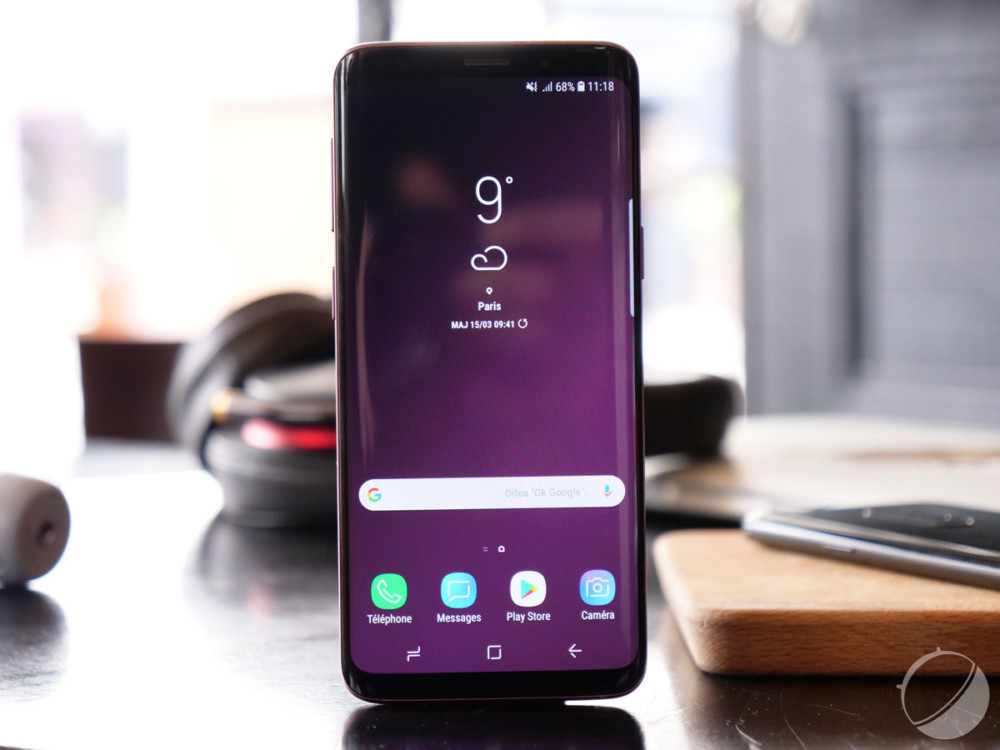
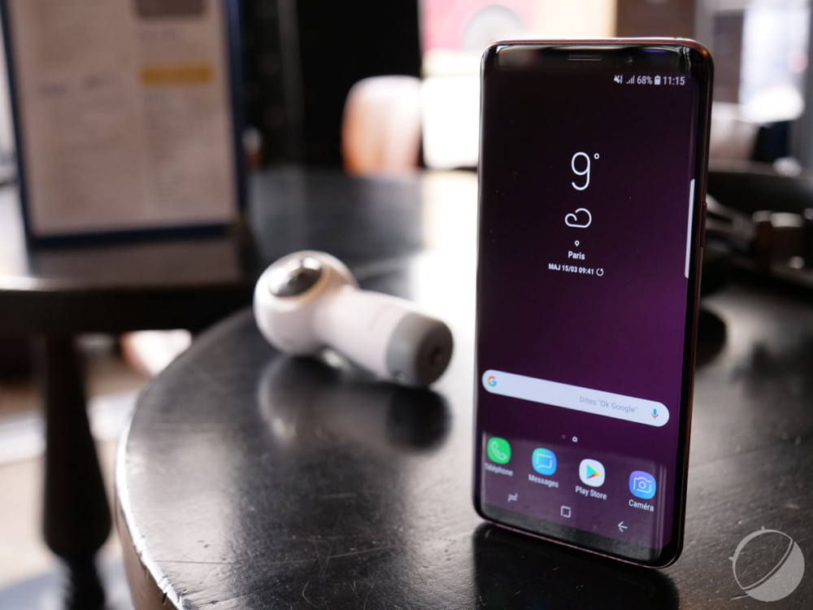
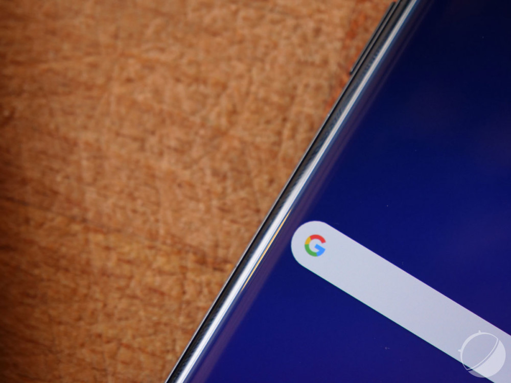
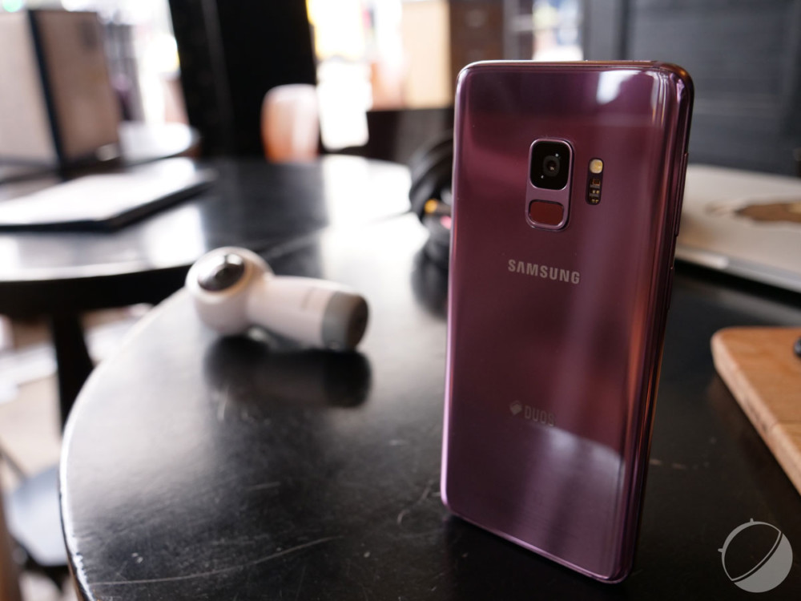
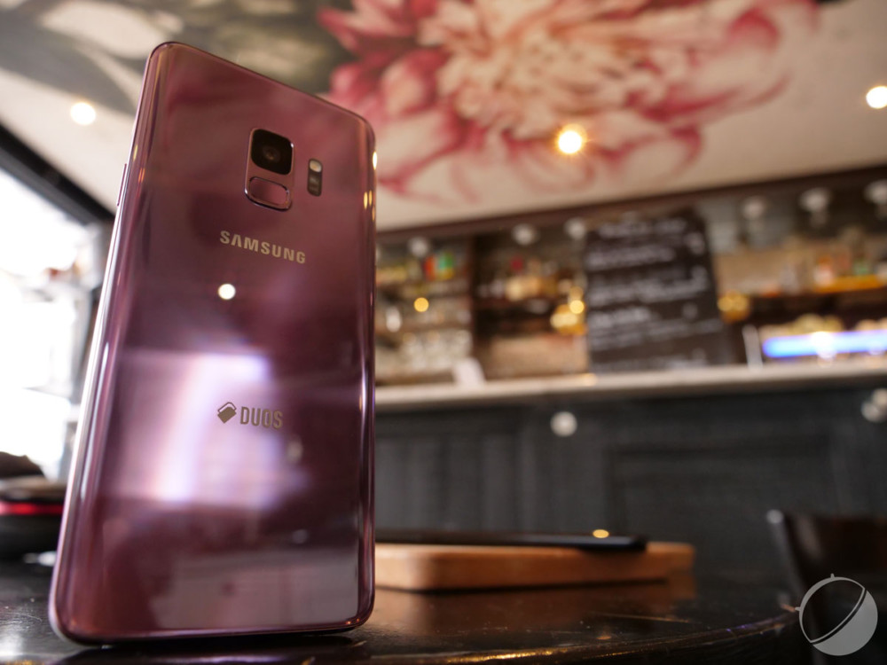
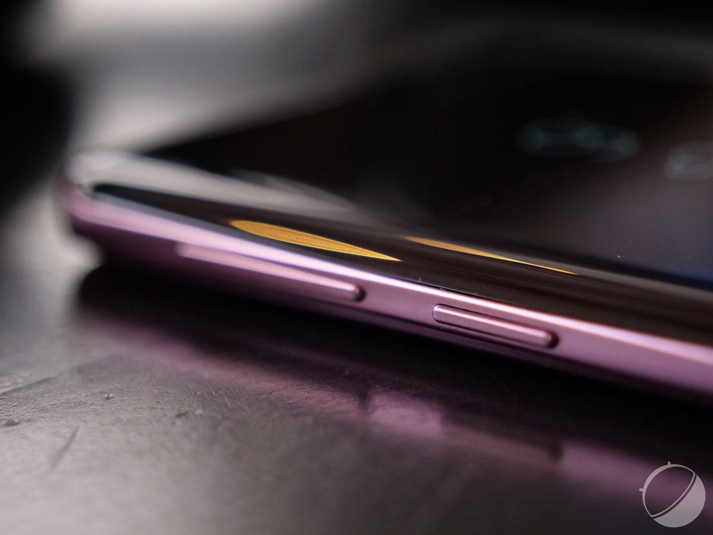
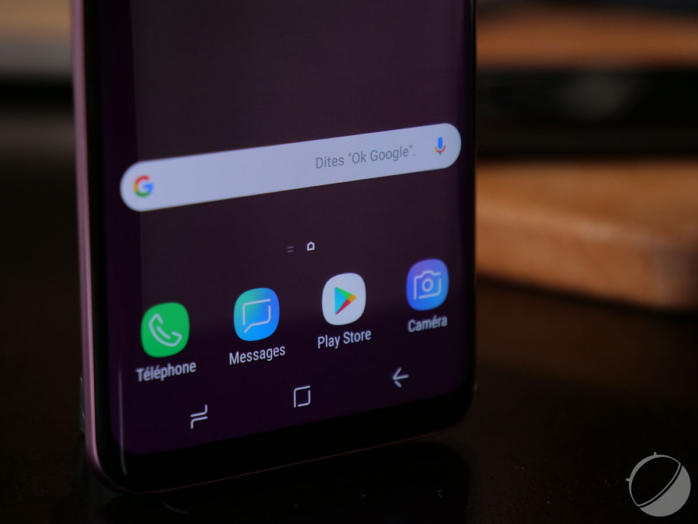
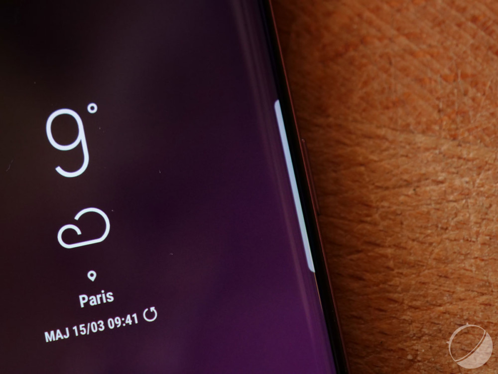
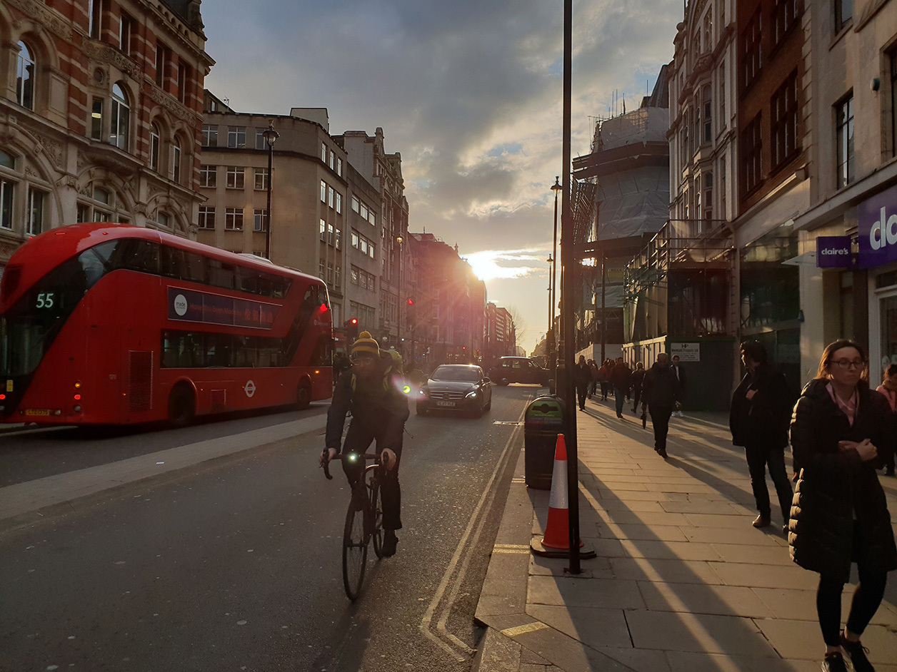
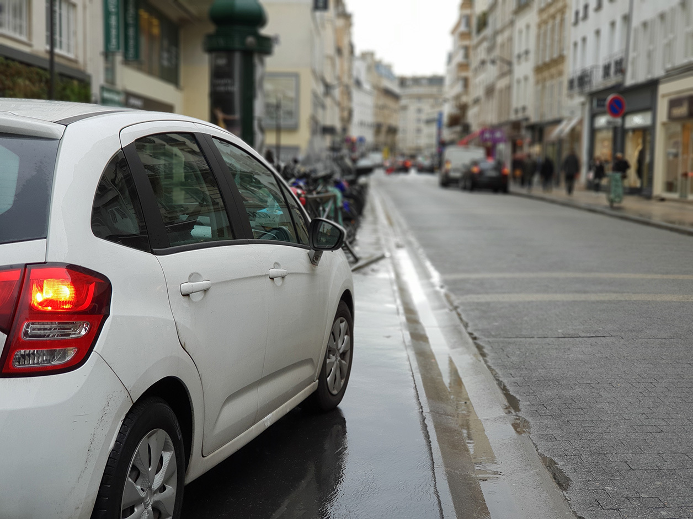

TEST DU SAMSUNG GALAXY S9
"
Note
8/10
Où acheter le Samsung Galaxy S9 au meilleur prix ?
Introduction
Samsung double la mise en ce début 2018 en sortant des Galaxy S9 et S9+ d’apparence très proche des S8 et S8+ de l’année dernière. Pour autant, le constructeur coréen met en avant des performances améliorées et de nombreuses nouvelles fonctionnalités photo. De quoi véritablement justifier son prix augmenté ?
Fiche technique
| Modèle | Samsung Galaxy S9 |
|---|---|
| Version de l'OS | Android 8.0 |
| Interface | Samsung Experience |
| Taille d'écran | 5,8 pouces |
| Définition | 2960 x 1440 pixels |
| Densité de pixels | 570 ppp |
| SoC | Exynos 9810 à 2,7GHz |
| Processeur (CPU) | ARMv8 |
| Puce Graphique (GPU) | Mali-G72 MP12 |
| Mémoire vive (RAM) | 4 Go |
| Mémoire interne (flash) | 64 Go, 128 Go, 256 Go |
| MicroSD | Oui |
| Appareil photo (dorsal) | 12 Mégapixels |
| Appareil photo (frontal) | 8 Mégapixels |
| Enregistrement vidéo | 4K |
| Wi-Fi | Oui |
| Bluetooth | 5.0 + A2DP + LE |
| Réseaux | LTE, HSPA, GSM |
| Bandes supportées | 2100 MHz (B1), 800 MHz (B20), 1800 MHz (B3), 2600 MHz (B7), 700 MHz (B28) |
| SIM | 2x nano SIM |
| NFC | Oui |
| Ports (entrées/sorties) | USB Type-C |
| Géolocalisation | Oui |
| Batterie | 3000 mAh |
| Dimensions | 147,7 x 68,7 x 8,5 mm |
| Poids | 163 grammes |
| Couleurs | Blanc, Noir, Gris, Violet |
| Prix | 484€ |
DESIGN
L’année dernière, Samsung frappait un grand coup avec les Galaxy S8 qui étaient les premiers à profiter de l’Infinity Display, combinant écrans incurvés et bordures réduites pour dédier la face avant à l’écran du téléphone. Un design frappant qui a su faire tourner bien des têtes. Preuve d’une année d’amélioration plus que de révolution de la formule, le Galaxy S9 embarque exactement le même design, ce qui n’est pas un mal en soi. Le retour de ses formes arrondies très agréables, son petit format pratique pour une utilisation à une main et son grand écran au ratio 18,5:9 sont plus qu’appréciés dans ce contexte.
 Quelques menus détails ont tout de même changé. Le Galaxy S9 est légèrement plus épais cette année, ce qui se voit (en plissant les yeux tout de même) sur sa tranche, mais en améliore la préhension. Surtout, on notera le placement du capteur d’empreintes à l’arrière du téléphone, qui passe enfin en bas du module photo à la verticale.
Souci réglé ? Pas vraiment. Le fait qu’il soit véritablement collé au capteur photo continue de poser problème : le trouver est plus simple qu’auparavant, mais on a tout de même encore tendance à poser ses doigts sales sur l’objectif, qui réclame de temps à autre un nettoyage.
Le dos du téléphone est somme toute assez classique en dehors de cela, avec son unique capteur photo à la forme carrée accompagné par son flash et son capteur de rythme cardiaque à sa droite (et non gauche comme sur le S8). Il est évidemment en verre afin de permettre la recharge sans fil, comme c’était déjà le cas sur le modèle précédent. On y notera tout de même l’apparition du logo « Duos » cette année, très gros et pas forcément très plaisant esthétiquement.


Un autre point négatif souligné sur le Galaxy S8 est encore présent sur ce S9 : le bouton Bixby. Si l’on comprend que Samsung veuille offrir une place de choix à son assistant, il force une position moins naturelle des boutons de volume, qui se placent trop haut sur la tranche gauche du téléphone pour être facilement accessibles.
Sur la tranche droite, le bouton de verrouillage reste fort heureusement toujours placé à l’endroit où le pouce se repose naturellement. Toujours plus aucune touche sur la face avant, si ce n’est le retour à l’accueil qui s’exécute toujours en exerçant une pression forte sur le bas de l’écran. C’est ici un atout que l’on salue, particulièrement lorsque l’on fait automatiquement disparaître les touches de navigation virtuelles.


Apparaissent en haut du Galaxy S9 la trappe pouvant accueillir deux cartes Nano SIM ou une carte nano SIM et une carte SD ainsi qu’un micro de réduction de bruit. En bas, nous retrouvons toujours cette année une prise jack 3,5mm, un port USB type C, le micro d’appel et une ouverture large pour les haut-parleurs stéréo dont je vous parlerai plus en détail dans la partie son de ce test. Efficace ? Toujours. Il n’y a pas : même un an après l’avoir découvert pour la première fois, ce design Infinity Display fait toujours son petit effet. Malgré son écran d’une diagonale de 5,8 pouces, le Galaxy S9 reste très agréable à utiliser à une main et un compagnon de choix au quotidien. Cette nouvelle version est légèrement plus lourde que la précédente, mais c’est loin d’être un défaut : les matériaux utilisés sont tout simplement plus épais pour garantir une meilleure solidité. Il est également toujours certifié IP68 et résiste ainsi à une immersion dans l’eau douce sur 1,50 mètre pendant 30 minutes.
ÉCRAN
S’attend-on vraiment à autre chose que l’excellence en matière d’écran de la part de Samsung ? Le constructeur coréen s’est construit depuis des années une réputation en or sur ce terrain, et le Galaxy S9 ne fait pas exception. Un succès d’estime ne garantit bien sûr pas une exécution parfaite, mais le fait est qu’il est bien difficile de trouver quoi que ce soit à redire à l’écran du Galaxy S9 à l’utilisation. À l’œil et en utilisant son mode « adaptatif » (qui optimise automatiquement les réglages de l’écran selon le contenu affiché), il est tout simplement bluffant : les couleurs sont vives, les contenus sont précis et bien marqués, l’écran est incroyablement lumineux et tout semble tout bêtement… parfait.
La dalle du Galaxy S9 partage les mêmes caractéristiques que celle du Galaxy S8 l’année dernière, à savoir une Super AMOLED supportant une définition maximale en WQHD+ de 2960 x 1440 pixels, réglée toutefois par défaut en Full HD+ à 2220 x 1080p.
Rien ne vous empêche bien sûr de choisir sa définition maximale dans les options. Celles-ci vous offrent également deux autres calibrations en mode cinéma ou en mode photo, au choix. Il vous est également possible de rendre l’affichage plus chaud ou plus froid à l’envie sur le mode adaptatif.
LOGICIEL
Sur l’aspect logiciel, la formule de l’interface Samsung Experience avait été nettoyée sur le Galaxy S8. Ici, le Galaxy S9 débarque directement en sortie de boîte avec Android 8.0 Oreo et Samsung Experience en version 9.0.
L’expérience proposée est peu ou proue la même que sur le S8, ce qui n’est pas un mal en soi. On retrouve toujours une tonne d’outils de personnalisation, avec notamment une boutique de thèmes (gratuits et payants) permettant de modifier à loisir l’écran de verrouillage, le fond d’écran et les icônes de son smartphone. Sur ce grand écran Infinity Display, la possibilité de masquer automatiquement les boutons de navigation tout en gardant un accès au bouton Accueil par une pression forte en bas de l’écran est un véritable atout.
Plus encore, le launcher Samsung permet toujours des réglages approfondis, comme une grille d’applications plus larges et la présence ou non d’un bouton pour lancer le tiroir d’applications. Celui-ci s’éloigne d’ailleurs de l’organisation d’un Android pur en proposant un ordre de tri personnalisé et une navigation par glissement latéral.
SÉCURITÉ
Le logiciel n’est rien sans une bonne sécurité, ce que le Galaxy S9 offre en reprenant la même formule que le Galaxy S8 avec la présence d’un scanner d’iris, d’un scanner d’empreintes digitales et d’une reconnaissance faciale propulsée par le capteur frontal. La grande nouveauté de cette année est surtout le placement du scanner d’empreintes, qui reprend une place plus naturelle en étant situé à la verticale du module photo.
Comme nous le disions dans la partie design, ce placement est meilleur mais n’est pas encore parfait. Reste que le capteur d’empreintes est toujours aussi performant : bien que sa surface soit un peu petite, il reconnaît très rapidement les empreintes. Pourtant, il paraît plus lent que sur d’autres téléphones, et pour cause : le déverrouillage du téléphone se fait au prix de nombreuses animations, esthétiquement plaisantes (l’Always On Display s’ouvre sur l’écran de verrouillage qui s’ouvre sur l’écran d’accueil), mais plutôt lentes.
Un nouveau mode de sécurité fait son apparition cette année : l’analyse intelligente, réponse directe au Face ID d’Apple. Ici, le scanner d’iris et la reconnaissance faciale travaillent de concert pour identifier l’utilisateur, permettant un déverrouillage rapide du téléphone par un simple appui sur le bouton de déverrouillage.
Difficile de juger de sa sûreté, des tests complets sur ce seul aspect étant nécessaires pour cela. On peut toutefois dire que la fonctionnalité est pratique à l’utilisation, mais ne semble pas très sécurisée : dans de nombreuses situations, le téléphone semble bien plus se baser sur la seule reconnaissance faciale que sur l’iris.
PERFORMANCES
Qu’importe l’aspect logiciel si les performances ne sont pas capables de suivre les fonctionnalités offertes par le téléphone. Cette année, l’Exynos 9810 succède au 8895 du Galaxy S8, reste gravé en 10 nm, mais profite de la technologie LPP — évolution du LPE de l’année dernière — pour garantir de meilleures performances. Il profite de 4 cœurs custom haute performances et 4 cœurs custom basse consommation qui promettent une cadence maximale de 2,9 GHz.
Inutile de le dire, mais soulignons-le tout de même : dans un cadre d’utilisation classique, le Galaxy S9 est évidemment parfaitement fluide. Rien n’aura réussi à le faire souffler ne serait-ce qu’un peu, même en mettant en parallèle deux applications rafraîchissant régulièrement leurs données comme Twitter et YouTube. C’était bien évidemment attendu.
APPAREIL PHOTO
Depuis la sortie du Galaxy S6, Samsung domine la concurrence dans le domaine de la photo. Bien qu’il ne s’agisse pas de la « réinvention » promise par le fabricant, le Samsung Galaxy S9 assoit sa position en apportant davantage de détails en basses lumières grâce à l’ouverture à f/1.5. La possibilité d’ouvrir à f/2.4 permet d’apporter davantage de netteté dans de bonnes conditions lumineuses, le tout avec une plage dynamique jamais vue dans l’univers du smartphone - voir l’article dédié à la qualité photo du Galaxy S9 - et avec l’autofocus le plus rapide du marché.
La qualité vidéo est au beau fixe, avec la possibilité de filmer en 4K à 60 images par seconde. La bonne stabilisation permet au S9+ de filmer de belles séquences avec beaucoup de facilité. Comme le S9, le S9+ profite d’une nouvelle fonction de Super-ralenti à 960 images par seconde, qui livre des ralentis toujours plus impressionnants. Le Super-ralenti nous a permis de nous amuser à plusieurs reprises, à condition d’être dans de bonnes conditions lumineuses. Dans des conditions plus difficiles, la qualité d’image se dégrade fortement, notamment en raison d’une définition 720p.

Lors de la présentation du Galaxy S9+, Samsung a à peine abordé la présence du second module caméra. Peut-être parce que ce dernier n’est pas intégré au Galaxy S9, à notre grand regret. Peut-être aussi parce qu’il s’agit du même capteur que celui du Samsung Galaxy Note 8. Pourtant, sa focale équivalente à un 52 mm (f/2.4) permet d’obtenir de très jolis portraits, qui n’ont rien à envier à ceux des iPhone X et iPhone 8 Plus. Avec un module caméra principal qui frôle la perfection et un mode portrait performant, le Samsung Galaxy S9+ est probablement le meilleur choix possible pour un amateur de photo.

CONCLUSION
Au final, ce Galaxy S9+ est une évolution du Galaxy S8+ encore plus timide que ce qu'on pensait. La photo n'a pas vraiment été "réimaginée", contrairement à ce qu'annonçait Samsung, et l'autonomie reste en deçà de ce que peut offrir la concurrence. Mais il est difficile pour autant de ne pas reconnaître les qualités indéniables de ce mobile. Le design et l'ergonomie sont au top, l'écran se rapproche encore un peu plus de la perfection et les performances sont au rendez-vous. Bref, le S9+, comme son petit frère le Galaxy S9, se range parmi le peloton de tête de notre comparatif, mais certains de ses concurrents ne font pas autant de concessions. Face à un S8+ aujourd'hui beaucoup moins cher, ce nouveau fer de lance de l'écurie Samsung peine à convaincre.